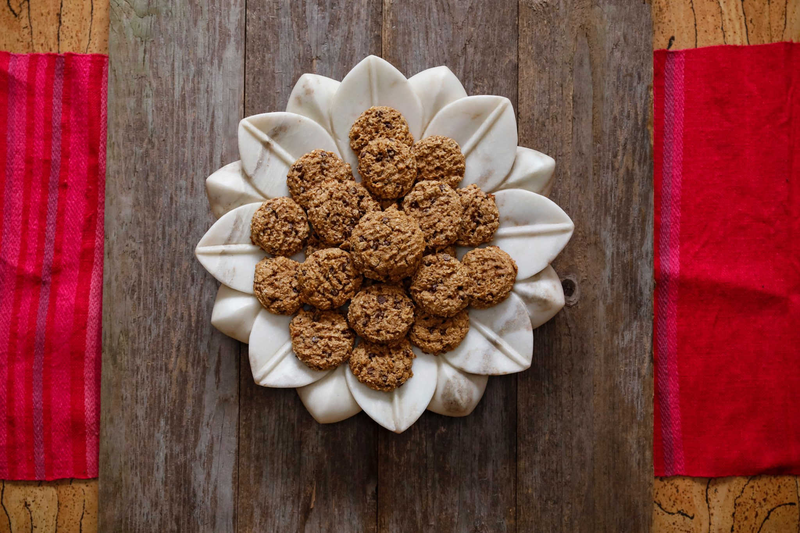
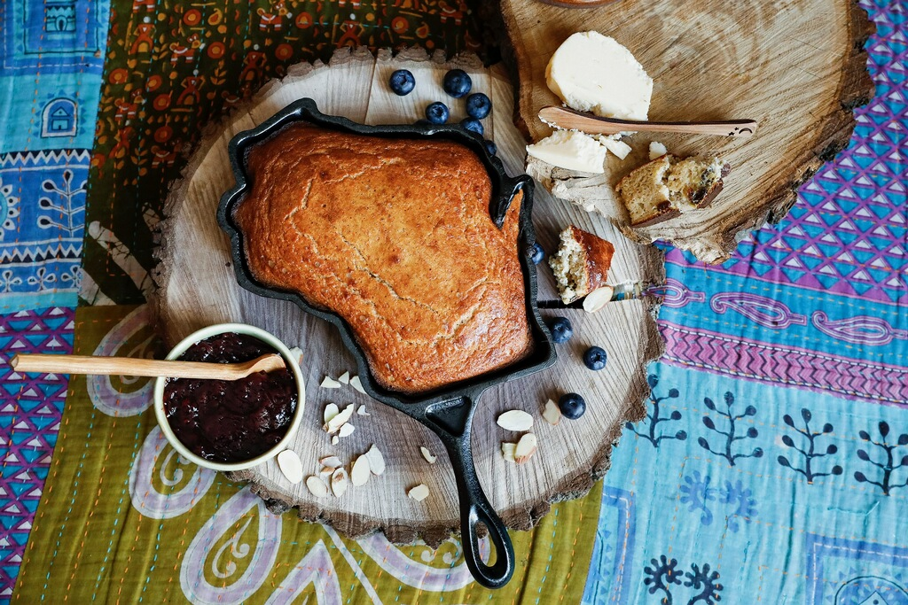

Many things about motherhood are surprising. Having a “sensory” child only adds to the heavy layers of daily life.
I had to get creative with our food. I figured out a way to make helpful foods that he would love, without problem ingredients like gluten and refined sugars.

